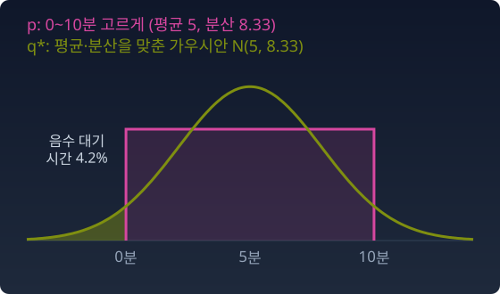

사영: 지수족 밖의 분포를 모형 위로
계산을 쉽게 하려고 모든 불확실성을 가우시안 하나로 적는 프로그램이 많다. 가우시안끼리는 더하고 곱해도 평균과 분산 두 숫자만 고치면 되기 때문이다. 그런 프로그램에 버스 대기 시간을 넣는다고 하자. 배차 간격이 10분이고 정류장에 아무 때나 도착한다면, 기다리는 시간은 0분에서 10분 사이 어디든 고르게 나온다. 이 분포를 가우시안 하나로 대신 적어야 한다면 어떤 가우시안을 골라야 할까? 가우시안은 종 모양이고 음수 쪽으로도 꼬리를 뻗는다. 어떻게 골라도 원래 모양은 아니다.
실제 데이터의 분포는 이보다 훨씬 복잡하다. 이미지, 자연어의 토큰, 단백질 구조의 분포는 지수족의 깔끔한 꼴을 따르지 않는다. 지수족은 가우시안·베르누이처럼 log p = θ·t(x) − F(θ) 꼴로 쓰이는 분포의 모임이다. 그 안에서는 자연모수 θ와 기대모수 η = E[t(x)]가 좌표가 되고, e-측지선은 θ 좌표의 직선, m-측지선은 η 좌표의 직선이 된다. 디퓨전 모델이 만들어 내는 이미지 분포도, 파라미터가 수억 개인 신경망이 표현하는 분포도 이 꼴이 아니다. 그러면 지수족 위에 쌓아 올린 도구는 쓸모없는가?
아니다. 전략을 바꾸면 된다. 복잡한 분포를 직접 다루는 대신, 다루기 쉬운 모형 안에서 「가장 가까운 점」을 찾는 것이다. 현실(p)을 지도(q)에 옮기는 것이다. 모형이라는 곡면 위에 가장 가까운 점을 찍는 이 일을 사영이라 부른다. 가까움은 KL 발산(Kullback–Leibler divergence, 한 분포를 다른 분포로 대신할 때 치르는 손해)으로 잰다.
KL은 앞 칸과 뒤 칸을 바꾸면 값이 달라서, 「가장 가까운 점」도 어느 방향으로 재느냐에 따라 달라진다. 이 비대칭은 발산이라는 척도의 성질이지 자(계량)가 비대칭이라는 뜻은 아니다. 발밑에서는 두 방향이 같은 피셔 이차식으로 줄어든다. 현실을 앞 칸에 둔 KL(p‖q)를 줄이면 q는 p가 있는 곳을 빠짐없이 덮으려 넓게 앉고(m-사영), 모형을 앞 칸에 둔 KL(q‖p)를 줄이면 q는 p가 거의 0인 곳을 피해 좁게 앉는다(e-사영). 이 절에서는 앞의 것, m-사영만 쓴다.
버스 대기 시간을 가우시안으로
가우시안들의 모임 안에서 KL(p‖q)를 가장 작게 하는 q는 무엇일까?
까닭은 한 줄이다. KL(p‖q) = −H(p) − Ep[log q]에서 앞의 엔트로피는 q와 상관이 없다. 가우시안 q에 대해 뒤의 항은 ½ log(2πσ²) + Ep[(x − μ)²]/(2σ²)이고, 이 값은 μ가 p의 평균, σ²가 p의 분산일 때 가장 작다. 가우시안족에서 m-사영은 평균과 분산을 맞추는 일이다.
버스의 경우 평균은 5분, 분산은 10²/12 ≈ 8.33이므로 q* = N(5, 8.33)이다. 이 가우시안은 기다리는 시간이 음수일 확률에 4.2%를 건다.

파이썬
import numpy as np
from math import erf, sqrt, log, pi
# 현실 p: 0~10분 사이 고른 대기 시간. 모형: 가우시안 N(μ, σ²)
x = np.linspace(0, 10, 200001) # p 가 0 이 아닌 곳에서 고르게 뽑은 점들
def kl_p_q(mu, s): # KL(p‖q) = -H(p) - E_p[log q], H(p) = log 10
return -log(10) + np.mean(0.5 * np.log(2 * pi * s**2) + (x - mu)**2 / (2 * s**2))
grid = [(kl_p_q(m, s), m, s) for m in np.arange(4, 6.001, 0.05) for s in np.arange(2.5, 3.301, 0.01)]
kl, mu, s = min(grid)
print(f"격자에서 찾은 q*: 평균 {mu:.2f} 표준편차 {s:.2f} KL {kl:.4f}")
print(f"p 의 평균 {x.mean():.2f} 표준편차 {x.std():.2f}")
print(f"q* 가 음수 대기 시간에 거는 확률 {0.5 * (1 + erf(-mu / (s * sqrt(2)))):.3f}")
# 격자에서 찾은 q*: 평균 5.00 표준편차 2.89 KL 0.1765
# p 의 평균 5.00 표준편차 2.89
# q* 가 음수 대기 시간에 거는 확률 0.042
평균과 표준편차를 이리저리 바꿔 가며 KL을 직접 재어도, 가장 작은 곳은 p의 평균과 표준편차를 그대로 맞춘 자리다.
수확
「현실이 모형 밖에 있으면 모형 안에서 가장 가까운 점을 찾는다. 이것이 사영이다. KL(p‖q)로 재면(m-사영) 가우시안족에서는 평균과 분산을 맞추는 것이 답이다.」
문제 10. 평균 65점, 표준편차 25.5점
어느 반의 시험에서 절반은 40점 근처(표준편차 5점), 절반은 90점 근처(표준편차 5점)를 받았다. 성적표에는 「평균 65점, 표준편차 25.5점」만 적혀 나왔다. (가) 평균과 표준편차가 정말 이 값인지 확인하라. (나) 성적표만 본 학부모가 점수 분포를 가우시안 N(65, 25.5²)으로 그렸다면, 55점에서 75점 사이 학생이 몇 %라고 여기겠는가? 실제로는 몇 %인가?
함께 풀기

평균은 (40 + 90)/2 = 65. 표준편차는 두 무리가 다 5점이니까 5점이요. 성적표가 틀렸네요.

40점 받은 학생과 90점 받은 학생은 평균에서 얼마나 떨어져 있어요?

25점씩이요. 아, 무리 안의 흩어짐만 셌네요. 분산은 무리 안의 5² = 25에 무리 사이의 25² = 625를 더해서 650, 표준편차 25.5예요. 성적표가 맞아요.

(나)는 N(65, 25.5²)에서 65 ± 10 안이니까 30.5%. 실제로는 55점에서 75점 사이에 거의 아무도 없어. 계산하면 0.1%쯤이야.
성적표의 두 숫자는 틀린 게 없어요. 그럼 학부모는 어디서 틀렸어요?

숫자가 아니라 모양이요. 평균과 표준편차를 맞춘 가우시안을 원래 분포로 믿은 거예요. 버스 대기 시간처럼, 평균과 분산이 같아도 모양은 전혀 다를 수 있어요.
조별 과제 평균 점수가 같은 두 조라도, 한 조는 넷이 고르게 하고 다른 조는 둘이 다 하고 둘은 안 했을 수 있는 거랑 같네요.
문제 11. 두 가우시안을 섞으면 가우시안인가 (킬러)
p0 = N(−2, 1), p1 = N(2, 1)이다. (가) 반반 혼합 ½p0 + ½p1의 평균과 분산을 구하라. (나) 가우시안족의 기대모수 η = (E[x], E[x²]) 좌표에서 두 점의 중간점을 구하라. 어떤 가우시안인가? (다) (가)의 혼합과 (나)의 가우시안은 같은 분포인가? x = 0과 x = 2에서 밀도를 비교하고, KL(혼합‖(나)의 가우시안)을 구하라. (라) 자연모수 θ 좌표의 중간점(e-측지선의 중간점)은 무엇인가?
함께 풀기
(가)는 평균 0, 분산은 1 + 4 = 5요. 확인하려고 N(−2, 1)에서 5만 개, N(2, 1)에서 5만 개 뽑아서 합치고 가우시안을 적합(fit)했어요. 평균 −0.001, 표준편차 2.235. √5가 2.236이니까 딱 맞아요. 그러니까 혼합은 N(0, 5)예요.
(나)도 같아. η0 = (−2, 5), η1 = (2, 5)이니까 중간점은 (0, 5), 곧 N(0, 5). 앞에서 혼합이 m-측지선이고 m-측지선은 η 좌표의 직선이라고 했으니까, η 직선의 중간점이 곧 혼합이야. (다)는 「같다」.
두 사람이 다른 길로 같은 답에 왔네요. 그럼 (다)의 밀도를 재 봐요. x = 0에서요.
혼합은 0.5 × N(0; −2, 1) + 0.5 × N(0; 2, 1)이니까… 0.054요. N(0, 5)는 0.178이에요.

세 배 넘게 차이 나요. x = 2에서는 혼합이 0.200, 가우시안이 0.120이고요. 같은 분포가 아니에요. 그런데 적합은 그렇게 잘 맞았는데요?
민준 학생이 적합으로 맞춘 건 뭐였어요?
평균이랑 표준편차요. …아, 가우시안을 적합하면 가우시안이 나오는 게 당연하네요. 혼합이 가우시안이라서 맞은 게 아니라, 제가 가우시안 중에서 제일 가까운 걸 고른 거예요. 모양은 확인을 안 했어요. 성적표 문제의 학부모랑 같은 실수를 제가 또 했네요.
모양을 한 숫자로 확인할 방법은요?
첨도(봉우리가 얼마나 뾰족하고 꼬리가 두꺼운지 재는 수)를 쟀더니 혼합은 1.72, 가우시안이면 3이어야 해요. 혼합은 봉우리가 둘이라 가운데가 꺼져 있어요.

그럼 제 논리가 어디서 틀린 거죠? 혼합은 m-측지선이고, 지수족에서 m-측지선은 η의 직선이잖아요.
그 두 문장 각각은 어느 공간에서 한 말이에요?
첫 문장은… 모든 분포의 공간, 아니면 성분을 고정한 혼합들의 모임에서요. 거기서는 밀도를 더하는 길이 곧은 길이에요. 두 번째 문장은 가우시안족 안에서요.

그런데 두 가우시안의 혼합은 가우시안족 밖으로 나가요. 큰 공간의 m-측지선이 가우시안족 안에 머물지 않는 거예요. 가우시안족은 밀도를 더하는 연산에 대해 닫혀 있지 않으니까요.
그래요. 그럼 가우시안족 안의 η 직선 중간점은 혼합과 무슨 관계예요?
평균과 분산이 혼합과 같아요. 혼합에서 가우시안족으로, KL(혼합‖q)가 가장 작은 q를 찾으면 모멘트(평균·분산 같은 기댓값)가 맞는 가우시안이 나오니까… 혼합을 가우시안족에 m-사영한 점이에요.

큰 공간에서 혼합을 만들고, 그걸 가우시안족으로 내려찍은 그림자가 η 중간점이에요. 두 개가 겹쳐 보인 건 그림자와 물체를 같은 것으로 본 거고요.
KL(혼합‖N(0, 5))를 쟀더니 0.172예요. 0이 아니에요. 제 샘플 합치기도 결국 같은 그림자를 만든 거네요. 적합이 곧 사영이니까.
(라)도 해 봐요.
θ = (μ/σ², −1/(2σ²))이니까 θ0 = (−2, −½), θ1 = (2, −½), 중간점은 (0, −½), 곧 N(0, 1)이에요. 두 밀도의 기하평균을 정규화해도 exp(−(x+2)²/4 − (x−2)²/4) ∝ exp(−x²/2)라서 N(0, 1)이 맞아요.
곱셈의 중간은 분산 1, 덧셈의 그림자는 분산 5. 같은 두 끝점인데 중간이 다섯 배 차이네요.

오늘 두 사람 다 한 번씩 그림자에 속았어요. 민준 학생은 적합한 결과를 원래 분포로 봤고, 서연 학생은 큰 공간의 정리를 작은 족 안으로 그대로 가져왔어요. 가져갈 것은 하나예요. 곱셈의 길은 지수족 안에 머물지만, 덧셈의 길은 지수족 밖으로 나간다. 그래서 지수족 안에서 덧셈의 결과를 보려면 사영이 필요하다.
선형대수에서 부분공간 밖의 벡터와 그 정사영을 구분하라고 배웠는데, 여기서는 그 부분공간이 「가우시안족」이었네요.
문제 12. 갈림길에서 평균을 내는 운전 모델
사람이 운전한 기록을 흉내 내도록 학습하는 모델이 있다. 아래는 계산을 위해 지어낸 장면이다. 도로 한가운데에 장애물이 있는 갈림길에서, 운전자의 절반은 핸들을 왼쪽으로 30°, 절반은 오른쪽으로 30° 꺾었다(각각 표준편차 5°). (가) 모델이 핸들 각도 하나를 내놓고 평균제곱오차(MSE)로 학습한다면, MSE를 가장 작게 하는 출력은 몇 도인가? (나) 각도 하나 대신 가우시안 N(μ, σ²)을 내놓고 로그우도를 키우도록 학습하면 μ와 σ는 얼마가 되는가? 이 가우시안이 ±10° 안에 거는 확률과, 실제 운전자 가운데 ±10° 안으로 꺾은 비율을 견주어라. (다) 무엇을 바꿔야 하는가?
함께 풀기
모델이 똑똑하면 왼쪽이든 오른쪽이든 하나를 고르겠죠. −30°나 +30°요.
−30°로 냈을 때 MSE를 계산해 볼래요?
왼쪽 운전자와는 오차가 거의 없는데 오른쪽 운전자와는 60°씩 틀려요. 0°로 내면 모두와 30°씩 틀리니까 그쪽이 더 작아요. MSE를 줄이면 평균인 0°가 나와요. 장애물로 곧장 가는 각도인데요.
(나)는 버스 문제에서 본 그대로야. 로그우도를 키우는 건 KL(p‖q)를 줄이는 거고, 가우시안족에서는 평균과 분산을 맞추는 거니까 μ = 0, σ² = 30² + 5², σ ≈ 30.4. 성적표 문제랑 같은 셈이야.
이 가우시안은 ±10° 안에 25.8%를 걸어. 실제 운전자는 0.003%밖에 그쪽으로 꺾지 않았고.
그럼 모델이 학습을 잘못한 거예요?
아니요. 모델은 자기 족 안에서 가장 가까운 점을 정확히 찾았어요. 가우시안 하나라는 족에 봉우리 둘이 없을 뿐이에요. 고치려면 족을 넓혀야 해요. 가우시안 둘을 섞은 꼴을 내놓게 하면 두 갈래를 다 담을 수 있어요.
그래요. MSE로 학습한다는 건 분산을 고정한 가우시안족으로 사영한다는 뜻이에요. 그 족에 무엇이 들어 있느냐가 답을 정해요.
조별 과제에서 의견이 둘로 갈렸을 때 둘을 반씩 섞어 낸 보고서가 어느 쪽도 설득하지 못했던 게 생각나네요.